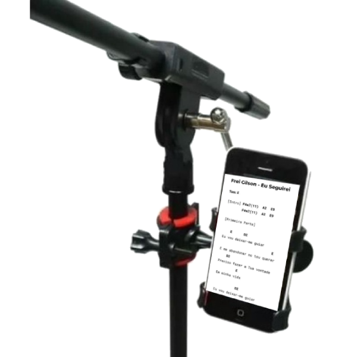
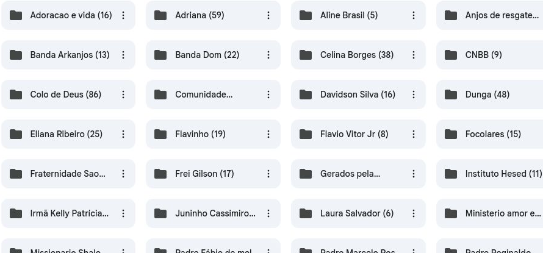

Tenha uma biblioteca completa com 1300 cifras católicas em PDF, organizadas por artista, funcionando até sem internet e prontas para abrir em segundos no celular, computador ou tablet.
Na hora da missa a internet simplesmente não funciona.
Sites cheios de anúncios dificultando encontrar rapidamente a música.
Acordes fora do lugar e difíceis de acompanhar.
Procurando cifras enquanto a celebração já começou.

Durante anos reuni cifras para tocar em missas, grupos de oração e encontros.
Organizei todo esse material por artista, em ordem alfabética, transformando tudo em uma biblioteca prática que cabe no seu celular.
Agora você encontra qualquer música em poucos segundos.
Todas as cifras estão separadas por artista e em ordem alfabética.

Caso o material não atenda às suas expectativas, você poderá solicitar o reembolso dentro do prazo oferecido pela plataforma de pagamento.
Acesso imediato após a confirmação da compra.